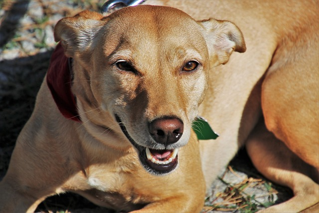
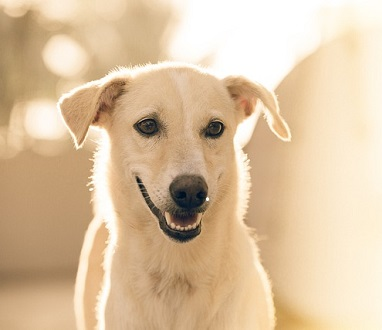
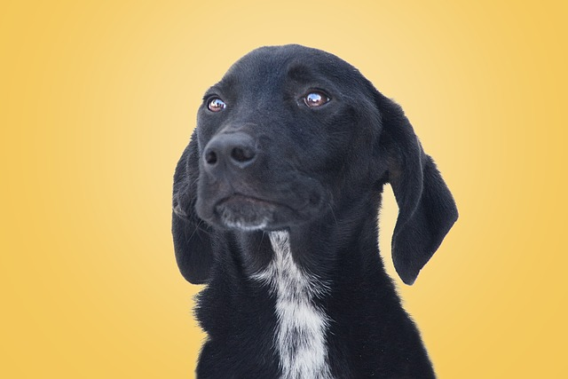
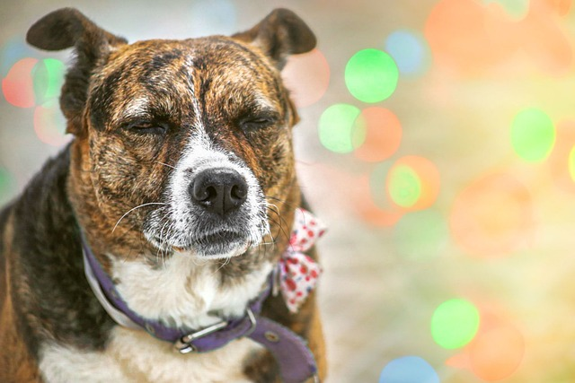

-
Vira Lata Caramelo
Curiosidades:
Sabia que o vira lata caramelo é considerado o cachorro 'padrão brasileiro'? Ele está presente em quase todas as cidades do país e, além de ser um ótimo companheiro, dizem que tem superpoderes como detectar churrascos a quilômetros de distância!
-
Neve
Curiosidades:
Apesar de ser todo branquinho, o Neve adora rolar na lama! Ele também é mestre em se esconder em lençóis brancos, tornando-se praticamente invisível. Dizem que é o cachorro favorito do Papai Noel.
-
Tuxedo
Curiosidades:
Tuxedo, com seu peito branco e pelo preto, tem o nome inspirado em um traje formal. Ele já participou de várias 'festas' no parque, sempre elegante e pronto para um biscoito. E acredite, ele já foi confundido com um mordomo!
-
Tigrão
Curiosidades:
Com suas marcas rajadas, o Tigrão é um verdadeiro explorador! Reza a lenda que ele já desvendou todos os segredos dos quintais da vizinhança. Além disso, é um exímio caçador... de chinelos perdidos!